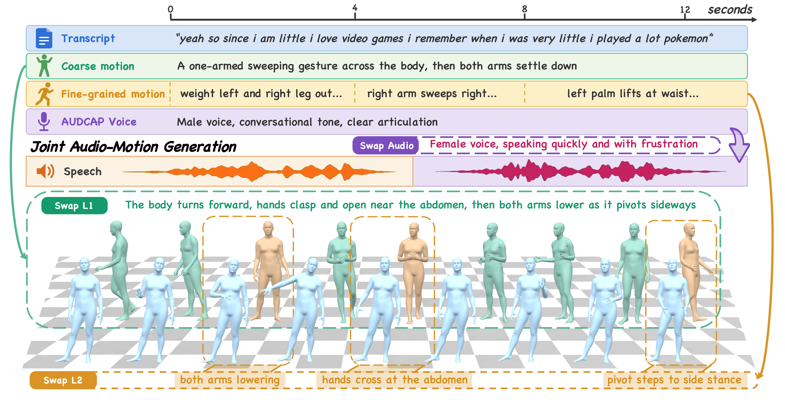

Abstract
An embodied speaker's expressiveness depends not only on what is said, but also on how the voice sounds and how the body moves. However, existing joint speech--motion generation models are largely driven implicitly by transcript semantics or intermediate speech representations, offering little explicit control over motion hierarchy, body parts, or vocal style. To bridge this gap, we construct MotionSpeech, a structured benchmark for controllable joint speech--motion generation that includes transcripts, voice-style descriptions, and motion conditions at two hierarchical levels. Building on this benchmark, we propose DuoFlow, a dual-stream latent flow transformer that jointly denoises speech and motion under a shared noise level and a unified second-based temporal coordinate. Modality-specific residual connectors inject structured conditions into the corresponding streams, layer-wise bidirectional cross-modal attention coordinates their generation, and a monotonic phoneme pathway combines normalized progress anchors with CTC supervision to strengthen speech temporal modeling. DuoFlow provides a unified interface for fine-grained motion and vocal-style control and demonstrates the ability to synthesize high-quality, synchronized, and instruction-consistent speech--motion sequences.
